Contents
Welcome to Ships 'n' Giggles, a free-to-play pirate adventure game, produced by a small team of indie developers based in York.
Fun for all ages, Ships 'n' Giggles, plays off the recent cult phenomona of retro-style games, the likes of Among Us and Binding of Issac. By blending the tile-based graphics of nostalgic titles such as Animal Crossing with the action of CoD Dead Ops.
Downloads
Assessment 1
Assessment 2
Project Plan
Assessment 1
To begin, as a team, we put together an initial plan. This was demonstrated with a Gantt chart:

Gantt chart showing the initial plan to approach the project (not to exact dates).
We discovered this approach was too detailed and as we began completing tasks it became progressively harder to achieve the initial goals we set out. Hence, we decided to change our approach to the planning and distribution of tasks.
This in turn was done by conducting 4 sprints of 2 weeks each adjusting the end goals as required within weekly group meetings on Wednesdays:

New updated Project plan with general goals for each sprint
We redesigned our project overview to more general goals allowing for flexibility among the team. If issues arose or requirements where to change, these can be addressed when the team met and weekly plans adjusted as needed.
Assessment 2
In the first weeks of the project, our team decided on an initial plan comprised of 3 sprints of 4 weeks, as outlined in the Gantt Chart below:
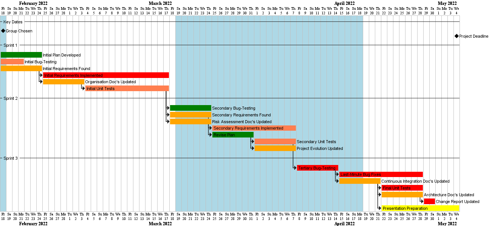Gantt Chart depicting initial plan (with generalised dates).
Weekly meetings were held on Fridays, in which group members discussed progress on their assigned tasks, and adjustments were made to the plan for the upcomming week with regard to task importance.
The Gantt Chat above clearly outlines the plan for the implementation and testing of code however isn't particularly clear on how the report side of the project will be undertook, hence the Gantt Chart below:

Gantt Chart depicting the teams approach to updating Assessment 1 docs.
Similar to the previous group, we discovered this approach was too ambitious. Quickly finding some requirements too challenging to be adequately implemented within a single sprint, thus extending their development into the next sprint.
After realising our current plan was not a good fit for our coding team, we decided on a new plan utilising PDD (plan-driven development). This did not have any notable affect the schedule for the updating of documents displayed in the Gantt Chart above, resulting in the plan diplated by the Gantt Chart below:
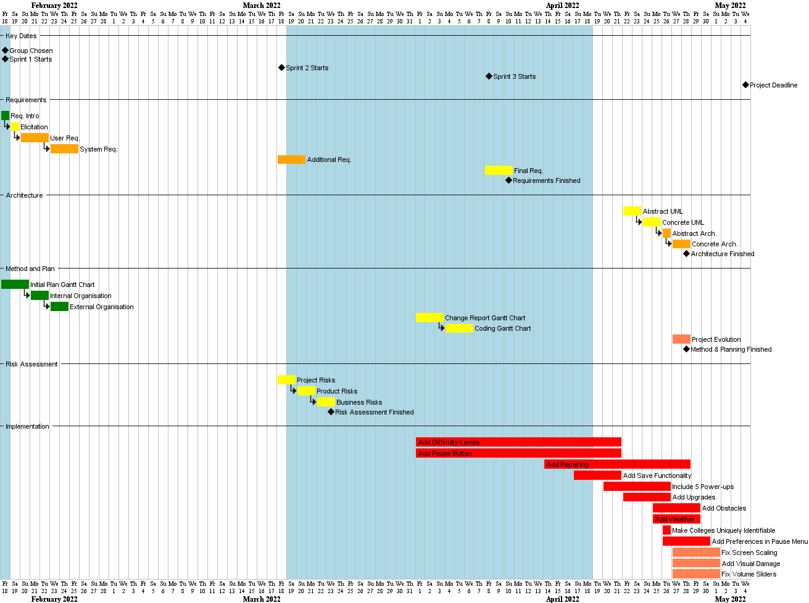Gantt Chart displaying the new plan.
Weekly Snapshots
Assessment 1
Please find below each weeks plan, as a Gantt chart. These are shown within the sprints that they fall into. Hence, each chart covers 2 weeks and we reviewed progress at weekly meetings on Wednesdays.
19/11/2021 - 24/11/2021

The most up to date sprint plan for this week
This week, we planned our approach to working as a team and the software we would use to achieve this. In addition, the week consisted of individually reviewing the assessment brief to get a better understanding of the project.
24/11/2021 - 30/11/2021
The most up to date sprint plan for this week
This week, in addition to continuing research for a game engine and project risks, the primary aim was for each member and questions to be well prepared for the customer interview planned for the end of the sprint.
1/12/2021 - 7/12/2021

The most up to date sprint plan for this week
At the start of the second sprint, the overall aim was to begin basic implementation of the game's classes working from the abstract software representation completed in the previous sprint.
8/12/2021 - 15/12/2021
The most up to date sprint plan for this week
This week, the focus of the implementation was to begin basic game logic and UI to have a simple application which displays to the user. Furthermore, the overall website design finished at the end of this week, allowing for any further documents to be added once ready.
5/01/2022 - 12/01/2022

The most up to date sprint plan for this week
Sprint 3 had a reduced number of objectives regarding documentation to reduce the workload for each member as we were approaching the common assessment period. Development continued, focusing on the requirements set out in the assessment brief.
12/01/2022 - 19/01/2022
The most up to date sprint plan for this week
This week, the group had a short meeting to evaluate the current prototype and ensure the project was on track to be completed on time. Development continued at a slower pace due to ongoing exams.
19/01/2022 - 26/01/2022

The most up to date sprint plan for this week
As we reached sprint 4, the overall aims were more focused on documentation, with more members working on these goals. As such the development of the game focused on refining areas, including the user experience with a reduced number of people working on these tasks.
26/01/2022 - 02/02/2022
The most up to date sprint plan for this week
This week, the focus on documentation continued, with tidying up and publishing finished documentation to the website. The game development reached it's finial stages and was checked by each individual to ensure all requirements set in the brief have been implemented effectively.
Assessment 2
18/02/2022 - 25/02/2022
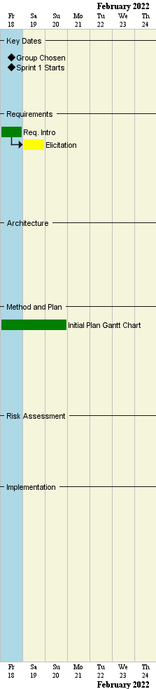An up to date visual of the week (coloured beige).
Group has elicited new requirements from the client, and have begun updating the assessment 1 documentation into the downloadables found under the assessment 2 section of the website downloadables.
The team has also begun to devise a overarching plan for the project schedule and how the workload will be divided amongst the members.
25/02/2022 - 04/03/2022
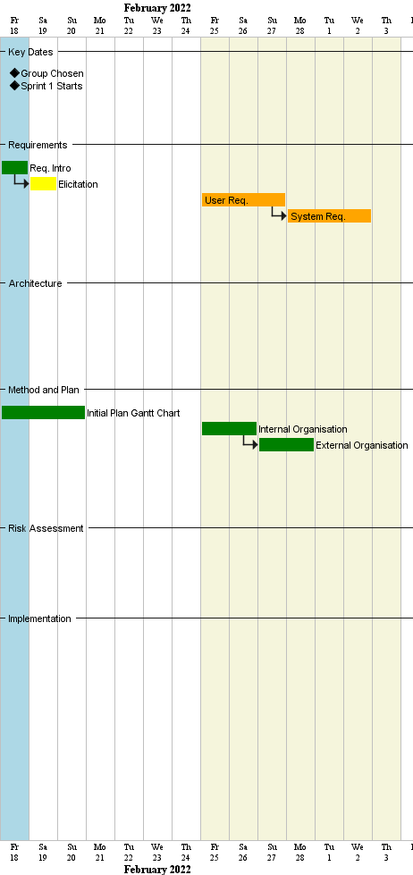An up to date visual of the week (coloured beige).
User requirements and System requirements have been updated, as well as sections on the internal and external organisation for the group.
04/03/2022 - 11/03/2022
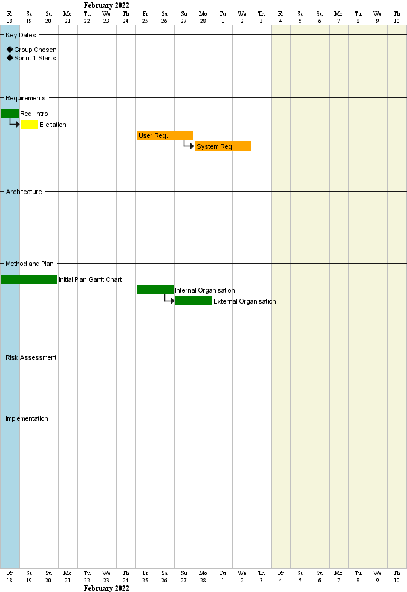An up to date visual of the week (coloured beige).
Not much progress made this week. Coding team begins to look at the previous teams code, trying to understand how it works.
11/03/2022 - 18/03/2022
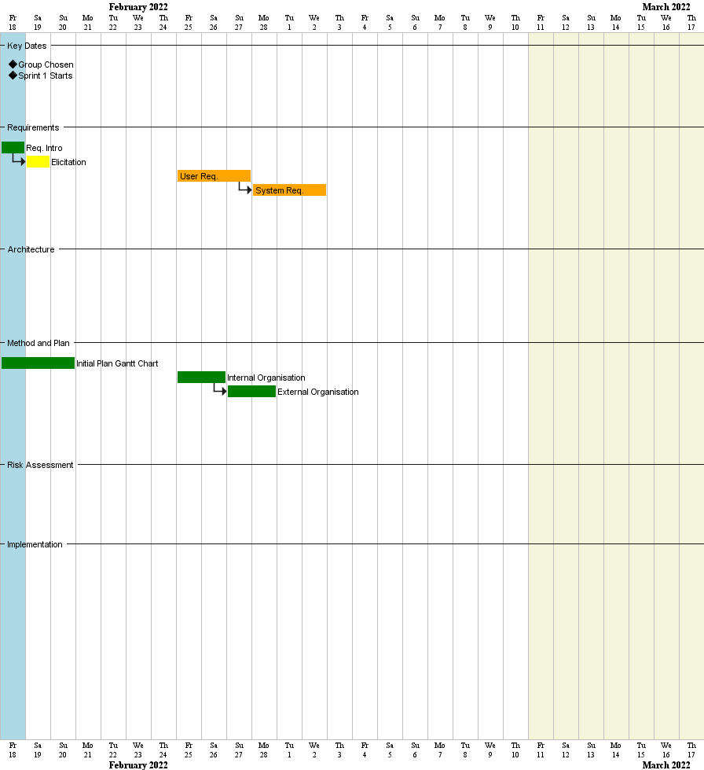An up to date visual of the week (coloured beige).
Not much progress made this week. Coding team is still trying to understand the pre-existing code. Some testing is performed on said code in order to discover any pre-existing bugs; these are reported under the 'issues' tab on the github repository.
18/03/2022 - 25/03/2022
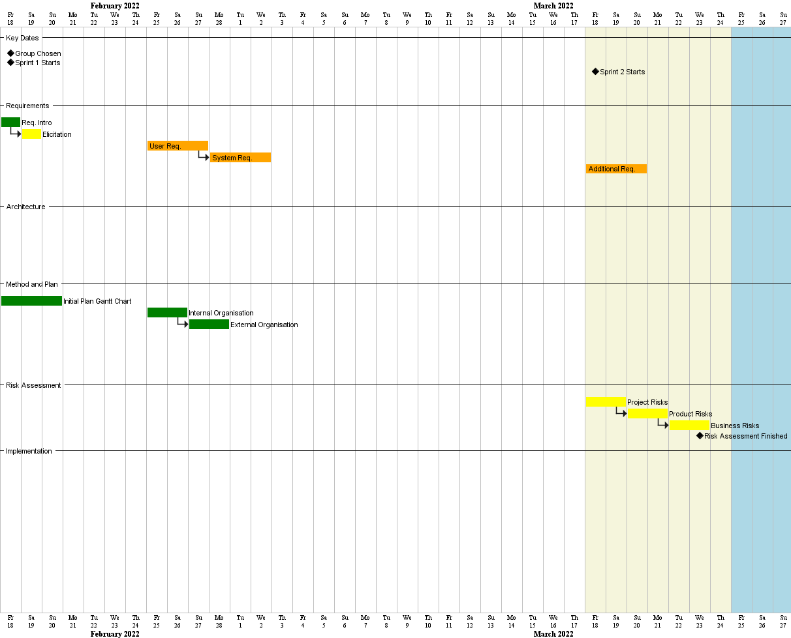An up to date visual of the week (coloured beige).
Additional requirements are updated, mainly consisting of pre-existing bugs. Project, product and business risks updated to reflect any new considerations. All new requirements for assessment 2 are also added to the 'issues' tab, to make it easier for the coding team to check what features have already been implemented and which still need to be completed.
25/03/2022 - 01/04/2022
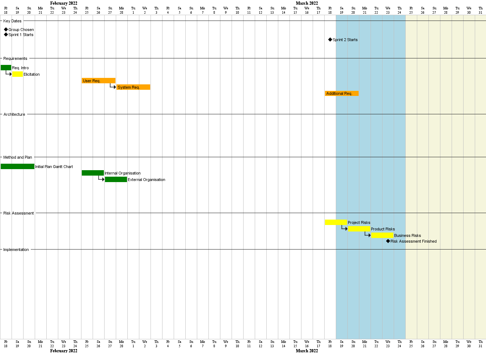An up to date visual of the week (coloured beige).
Coding team begins assigning tasks to members from the issues tab, each member is given 1-2 features to implement, dependent on predicted complexity and time to implement.
01/04/2022 - 08/04/2022
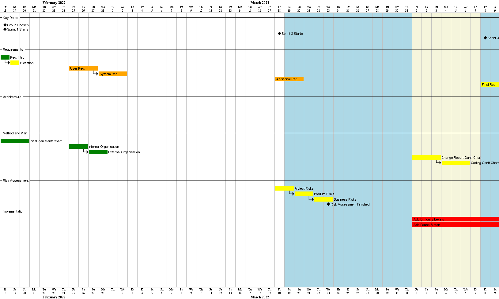An up to date visual of the week (coloured beige).
Group decided original plan needed fixing, the decision was made to swap to a plan driven development without the use of sprints.
Official Gantt charts created for website and documentation. These will be updated as and when necessary. Coding team continues work their assigned requirements.
08/04/2022 - 15/04/2022
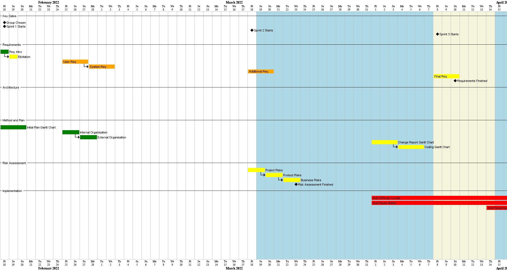An up to date visual of the week (coloured beige).
Another round of bug-testing is completed before any commits are made to the Github to pick up any remaining bugs that may have been missed before. These are reported in the final version of our updated requirements documentation.
15/04/2022 - 22/04/2022
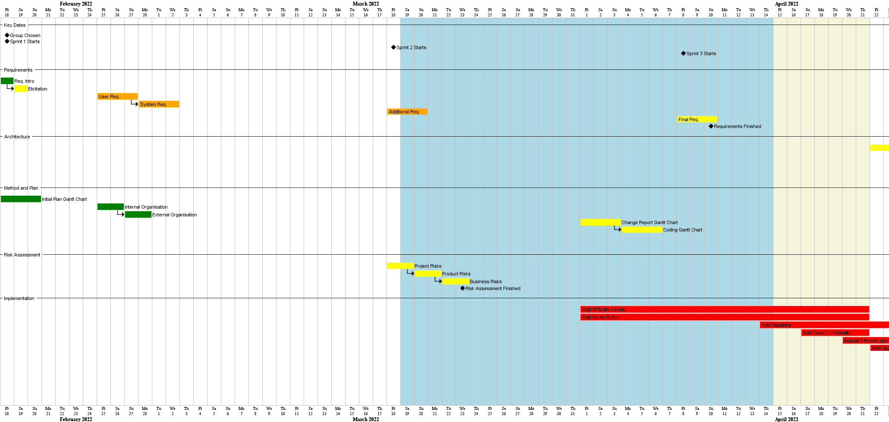An up to date visual of the week (coloured beige).
First of the new requirements are implemented and commited in full to the Github repository and white-box testing is begun in the 'testing' branch.
22/04/2022 - 29/04/2022
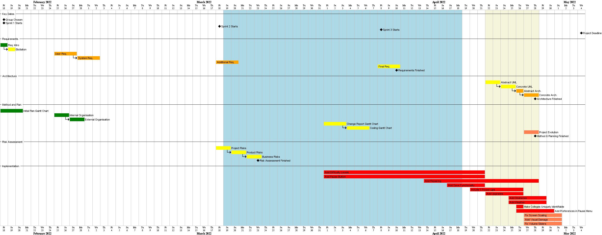An up to date visual of the week (coloured beige).
Last of the implementation section is being completed and architecture documentation was completed. A headless UI was created to aid with testing some more complex features of the code through Java Unit tests.
29/04/2022 - 04/05/2022
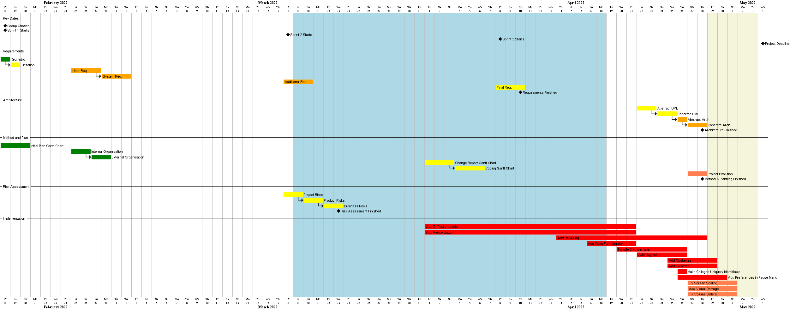An up to date visual of the week (coloured beige).
Unit testing is being finished, and final touches are being added. Project marketing material is created.